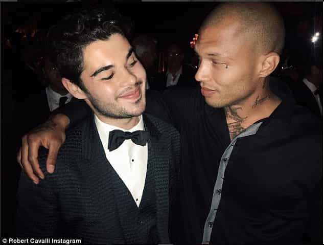
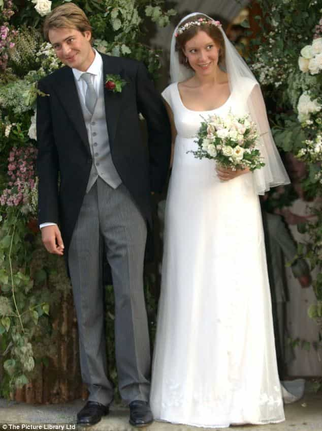

Nice guys with rich, beautiful, or even just average girlfriends, beware. “Hot con” Jeremy Meeks is on the prowl and proving once again that criminally-inclined men, especially good-looking ones, almost always win with women. He has just snared Chloe Green, the daughter of British billionaire Sir Philip Green. In the process, he has apparently cuckolded Green’s nice-guy-boyfriend and demolished his own marriage with the woman who stood by him while he was in prison.
Here’s the rich in girl in question:
Even as a 4/10 (arguably), Green is constantly surrounded by many of Britain and the world’s most eligible bachelors. Of all the men she could choose from, she selected one with a felonious past and gang affiliations.
We told you so

Robert Cavalli, the son of a mega-wealthy fashion designer, didn’t stand a chance against Jeremy Meeks.
Over a year ago, I wrote an article entitled, “Every Violent Male Criminal Is Rewarded With Sex From Beautiful Women”. I described high-profile cases of hot women falling for men who had been in prison as a “a microcosm of a significantly wider trend.” From Ted Bundy to Jeremy Meeks, a lot of girls, many of them very high-quality in physical terms, either will actively chase violent men or would love to if given the chance.
Despite the mounting evidence (and the gut feelings of almost all of us), countless men still rationalize that they can find and keep a woman by being considerate, a good provider, and otherwise fully attentive to her needs. The problem is that so many guys confuse what they think are her needs with her true needs.
Jeremy Meeks has been accused of ‘stealing’ Chloe Green from Robert Cavalli after Meeks and Green were spotted all over each other on a yacht in the Mediterranean. Even if we disregard Meeks’ much better looks, Cavalli, with all due respect, has the demeanor of a wimp in comparison:
There’s no point in moralizing what happened here, largely because female psychology is not morally-inclined by nature. No amount of ‘love’ or fealty to Cavalli prevented Chloe Green from following her biological imperative.
She just couldn’t resist a convicted felon.
Meeks’ good looks don’t explain everything
There’s no doubt that Meeks sits on one of the highest rungs in terms of raw male attractiveness. That said, the popularity he now enjoys is really due to his criminal rap sheet. Being handsome was a necessary but not sufficient condition for his newfound fame. Just as many are silly for assuming that having game obviates the advantages other men have in being more physically attractive, good looks are not a sure-fire way to drown in pussy.
Men like The O.C.’s Chris Carmack are arguably just as good-looking as Meeks, but fade from public view. Meeks’ looks do not explain everything.
The world has millions of good-looking people who will never come close to capturing the public’s attention like Meeks has. Every five times you visit a run-of-the-mill coffee store in a major city, you’re likely to see a male barista or patron who rivals or perhaps surpasses Meeks in the looks department. Yet the former is earning minimum wage or an average salary while the latter is reaping the rewards of his extended past as a miscreant.
If you want even more profound examples of this, look no further than the celebrity world, where a revolving door’s worth of good-looking men are discarded. Recently a girl I was with bought a copy of a terrible straight-to-DVD film called The Butterfly Effect 3, the second sequel to the original film starring Ashton Kutcher. I struggled to remember where I knew the male lead from, but eventually realised it was Chris Carmack from The O.C.
Carmack and those like him, irrespective of their looks, will never be a Jeremy Meeks precisely because they didn’t go down the path of crime and a disregard of authority. Study after study is demonstrating that women prefer men with darker and badder personalities, most commonly in the form of the Dark Triad. Good looks may ice the cake, but they don’t bake it.
Things are going to get much worse

Kate Rothschild got similarly wet for bad boy rapper Jay Electronica as Chloe Green did for Jeremy Meeks. Electronica didn’t have Meeks’ overtly criminal past, but the feel Rothschild got from him would have been close to identical.
A permissive social environment encouraging women to slut it up is only going to encourage the sort of behavior Chloe Green demonstrated on that yacht. Men without a knowledge of game and even many of those with it will continue to face an uphill battle. They will struggle to get and then keep average women, let alone high-quality ones, in the face of competition from life-long, real bad boys with a history of objectively anti-social or foul behavior.
Society is very unlikely to change its present course. I predict (and I’m sure others will, too) that many of game’s current value-demonstrating routines will become redundant or far less effective. The sexual marketplace will make Main Street versions of a Chloe Green all the more common. Roosh himself admitted in his recent Q&A session that Bang had a shelf-life of about ten years, which is why he is writing a new book that can last for thirty.
Funnily enough, even ‘respectable’ families like the Rothschilds have found a daughter falling for either criminally-inclined men (her recent boyfriend) or men who give off the air of being unashamedly intimidating (her former boyfriend). Kate Rothschild destroyed her marriage with Ben Goldsmith, himself from a very Rothschild-like family, when she got the tingles for rapper Jay Electronica. Last year she was dating a former drug dealer, showing that the elite are not immune from the degeneracy they squeeze onto the masses.
The moral of the story is that crime often pays for men’s sexual relationships with women. Good looks certainly help, but plenty of either good-looking women or high status women from the ‘best’ families are unable to resist the man with the dark, violent past.
Read More: Every Violent Male Criminal Is Rewarded With Sex From Beautiful Women